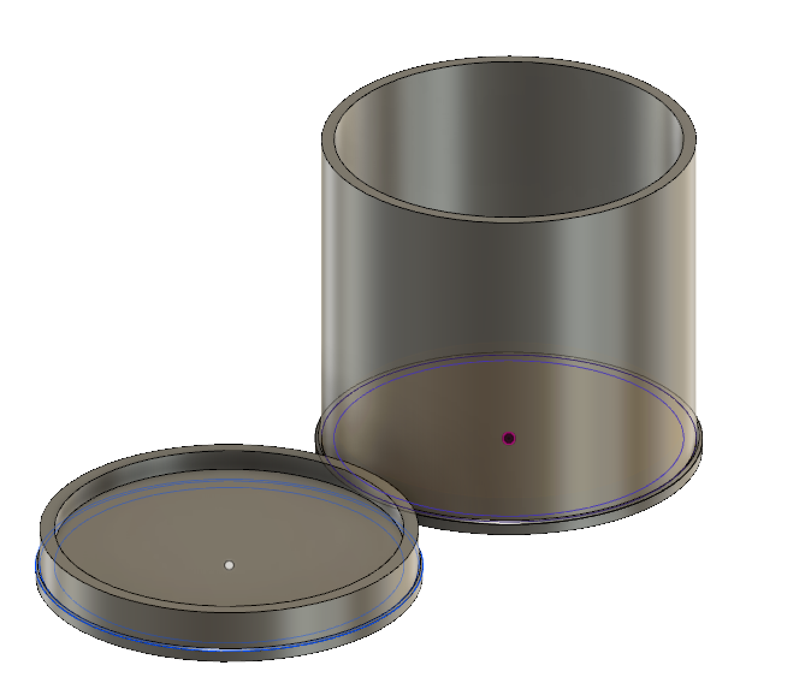

Cento
After completing 11th Grade coursework in Calculus I, I used ‘optimization’ to analyze the cost effectiveness of Cento Fine Foods’ product packaging. Cento Fine Foods is a global distributor of non-perishable foods, including soups, legumes, and vegetables.
I re-dimensioned their chickpeas can to require less material for production while maintaining its current volume. In doing so, I found that if I decreased the can's height by 1.38 cm and increased its radius by 0.31 cm, the can would maintain its 19 oz. volume while saving 4.49 cm² of the sheet metal material used in its production. Saving 4.49 cm² of steel per would amount to saving $0.026 per can as well.
As per a report by the USDA National Agricultural Statistics Service, the total value of American chickpeas production by year increased 331.6% from 2015 to 2017, to $202,480,000. Considering chickpeas are an exponentially growing industry, there is massive upside in upgrading the material efficiency of their can production. Cento can save millions of dollars, all starting with a minute alteration in their chickpeas can’s design.
I presented my findings to a superintendent at Cento, which was then passed up to the packaging department, vice president, and president of the entire organization. At home, I 3D designed a model of the optimized can to the exact specifications which I had correctly calculated and proceeded to 3D-print it. Next, I composed a business letter to Cento with my proposal and was met with a gracious request to send my calculations and 3D-printed optimized model. Though not a blaring issue for Cento, I hopefully proved to them the importance of product packaging both for financial reasons and for environmental sustainability. With my help, Cento Fine Foods can advance their brand and business model.